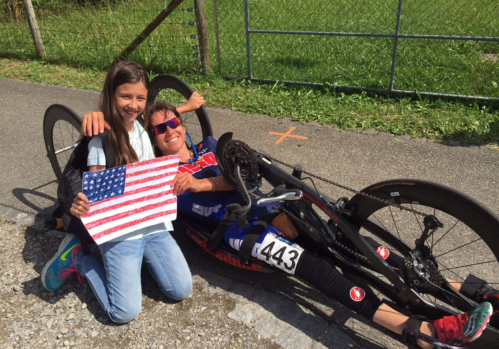

Alicia Dana
This site shares my journey as a competitive handcyclist: the trials and tribulations, the support along the way, the various players involved...Check it out!

Fort Wayne Paracycling Open
April 17 + 18
Fort Wayne, IN
Redlands Bicycle Classic
April 23
Redlands, CA
UCI Paracycling Road World Championships
June 4-7
Oostend, Belgium
US Paralympic Team Trials
June 27
Minneapolis, MN
Living in Vermont, the off-season for me begins in October and ends in April or so. Roughly six months of the year I don't train on the road. While this is an important "break", it can be a challenge to stay focused, motivated, and in shape... Read more
There is no way I could be doing what I am doing today without some pretty incredible people, whose help - direct or indirect - has been critical. While it's impossible to name every single source of support, an ongoing tribute to the main players feels entirely appropriate.
A big season lies ahead with the Tokyo 2020 Paralympic Games in early September! It will be tough competition to qualify, at the Trials in Milwaukee.
Tokyo 2020 Paralympic Games UCI Tokyo 2020